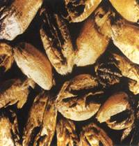
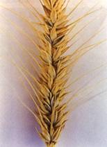
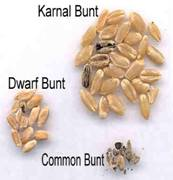
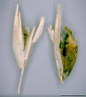

WHEAT :: MAJOR DISEASES :: KARNAL BUNT
Karnal bunt - Neovassia indica
Symptoms
Symptoms of Karnal bunt are often difficult to distinguish in the field due to the fact that incidence of infected kernels on a given head is low. There may be some spreading of the glumes due to sorus production but it is not as extensive as that observed with common bunt. Symptoms are most readily detected on seed after harvest.
|  |  |  |  |
Symptoms |
|||
The black sorus, containing dusty spores is evident on part of the seed, commonly occurring along the groove. Heavily infected seed is fragile and the pericarp ruptures easily. The foul, fishy odor associated with common bunt is also found with karnal bunt. The odor is caused by the production of trimethylamine by the fungus. Seed that is not extensively infected may germinate and produce healthy plants.